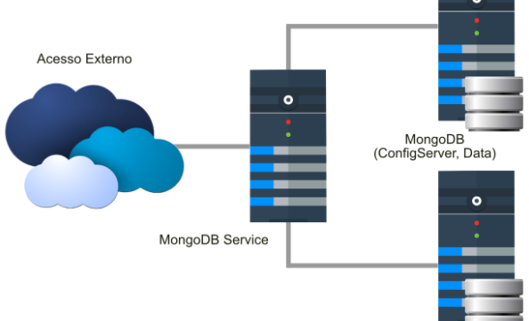

MongoDB
MongoDB
O que é?
MongoDB é um software de banco de dados orientado a documentos livre, de código aberto e multiplataforma, escrito na linguagem C++.
O que se trata?
Além de noSQL, ou seja, não utiliza a linguagem SQL. Ele é um banco orientado a objetos, que no caso, são chamados de documentos. Sua estrutura é considerada “schemaless”, ou seja, um banco de dados sem uma regra específica, ao contrário de bancos estruturados, como o MySQL, que se utilizam da estrutura de linhas e colunas.
